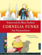

Emma und der Blaue Dschinn; Das Piratenschwein

Kleine Emma oder Jule Piratenschwein – welche Helden durfen’s heute sein? Emma und der Blaue Dschinn: Die kleine Emma ist ganz aufgeregt: Sie hat einen echten Flaschengeist gefunden! Doch der kann ihr keinen einzigen Wunsch erfullen. Schuld ist der boseste aller Gelben Dschinns. Er hat dem Blauen Dschinn einfach den Nasenring gemopst! Das Piratenschwein: Als der dicke Sven und sein Schiffsjunge Pit am Strand ein Fass finden, trauen sie ihren Augen kaum: Darin sitzt ein Schwein namens Jule, das Schatze aufspuren kann! Kein Wunder, dass Jule sogleich von einer wilden Piratenhorde entfuhrt wird. Konnen Sven und Pit sie retten?